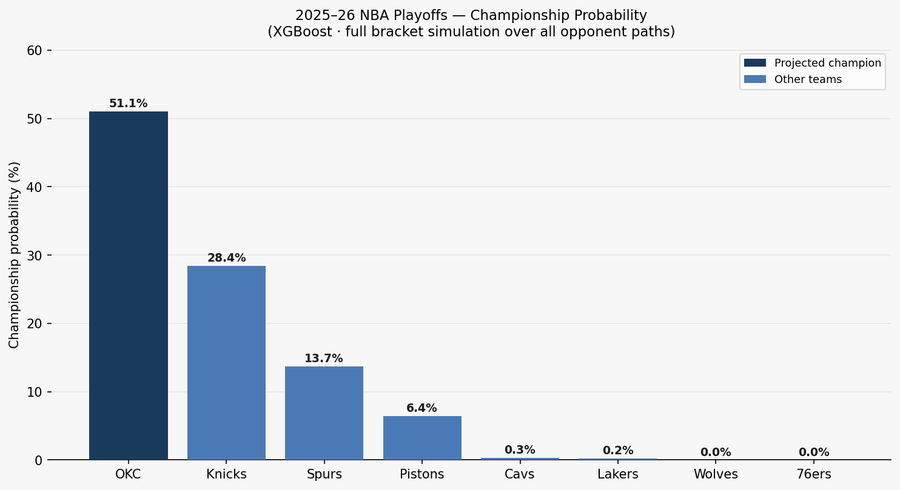

NBA Playoff Series Outcome Predictor
A series-level NBA playoff prediction pipeline using pre-series regular-season data, model comparison, XGBoost, and SHAP explainability. The project predicts series winners rather than individual games to reduce single-game noise.
Problem
Individual playoff games are noisy. A seven-game series is a better unit for measuring team quality because the stronger team has multiple chances to reveal its advantage. This project asks whether regular-season efficiency and team-quality features can rank series outcomes better than a naive seed-based baseline.
Method
The project aggregates playoff matchups to the series level and builds features from regular-season team quality, efficiency, pace, win percentage, turnover rate, offensive rating, defensive rating, and playoff-history indicators. Logistic regression, random forest, and XGBoost are compared on temporally held-out playoff seasons.
Result
XGBoost produced the strongest ranking performance with a 0.683 ROC-AUC on the held-out 2022-2024 seasons. SHAP analysis identified offensive rating differential, turnover rate, underdog quality, and playoff experience as important signals.

{kind=link}